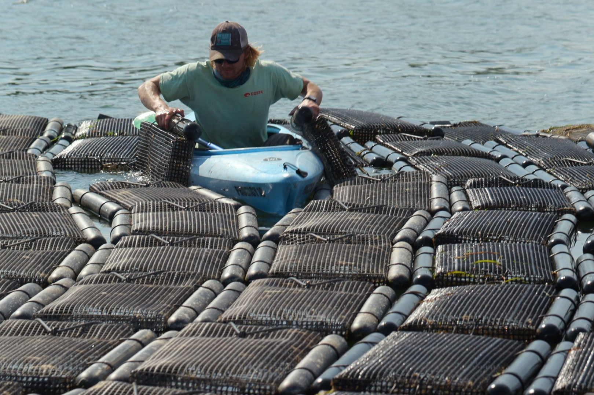
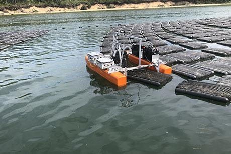

Détails des articles

Mon stage actuel au MIT
Je suis actuellement au MIT dans le cadre de mon stage de 2e année, dans le laboratoire MIT Sea Grant sous la direction de Professeur Triantafyllou et de Andrew Bennett. Mon stage consiste en la conception d'un bateau autonome permettant d'effectuer des tâches habituellement rébarbatives pour les ostréiculteurs. En effet, certains sacs d'huitres sont à retourner tous les 10 jours et pèsent parfois plus de 20kg. C'est pourquoi un robot capable de faire ce travail permettrait aux ostréiculteurs de se faciliter la vie (d'autant que d'après les statistiques, il y a un turnover de plus de 60% pour ceux qui font cette tâche). C'est ainsi que j'ai été affecté sur ce projet, aussi bien sur la partie electrique, que sur la partie navigation autonome. Le but de mon stage consiste alors dans la conception d'une solution de trajet autonome couplée à de la vision par ordinateur pour repérer les sacs d'huitres.
La solution actuelle
 A gauche les solutions actuelles qui sont extremement laborieuses. C'est pourquoi nous avons mis en place un prototype( mon stage a commencé il y a 10 jours, soyez indulgent). Je suis parti de 0 et ait tout assemblé pour avoir un prototype fonctionnel rapidement pour mettre en place la partie navigation autonome qui est le coeur de mon stage.
Ainsi, voici le prototype actuel de bateau autonome. Il est composé de deux flotteurs, une boite étanche percée avec des presse-étoupes pour faire passer les différents cables. Actuellement, le bateau est pilotable manuellement à la télécommande et est capable de passer par des points de controles déterminés avant. Il reste toutefois la partie vision par ordinateur qui semble plus ardue. Les solutions actuelles de navigation autonome sont assurées par une pixhawk 4 basée sur ardupilot, et la motorisation se fait via 2 propulseurs couplés à des ESC. Les trajectoires empruntées méritent pour l'instant un petit recalibrage pour augmenter la résilience aux perturbations (vagues, vent). La partie vision par ordinateur se fera avec une Raspberry PI 4 qui interragira via MAVLink avec la Pixhawk pour créer des points de passage en lien avec les sacs d'huitres repérées par la caméra sur le bateau. Il me reste encore 50 jours de stage donc la route est encore longue avant d'avoir un bateau totalement fonctionnel mais je semble être sur la bonne voie !
3 Commentaires
Alexis Hobl 10/06/2022 à 20h49
Je suis ébahi par un tel stage. Le drone du CNES vole t-il cependant? Hubert me demande des nouvelles.
Hamid Tesla Boss 10/06/2022 à 23h12
Pourquoi ne pas avoir utiliser un variateur electronique à 28 phases? C'etait pourtant plus simple ! Cordialement Hamid.

Gurvan Jodin 10/06/2022 à 23h42
En effet, je ne comprends pas son choix. On devrait réflechir à l'envoyer dans une autre agrégation que celle d'electronique...
Laisser un commentaire
© Robinson Mauchet Corporation. Tous droits réservés. Template de HTML Codex